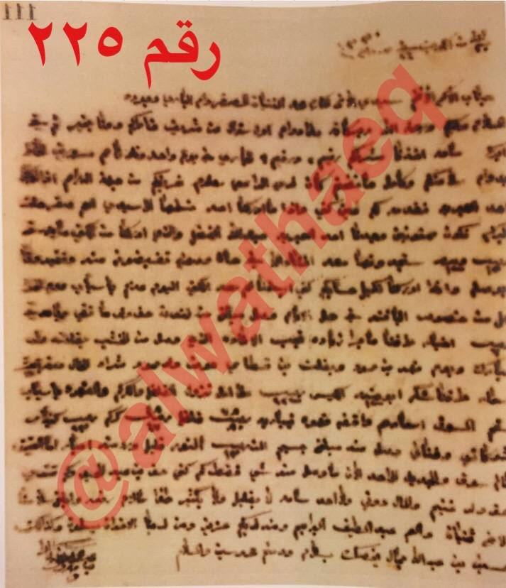
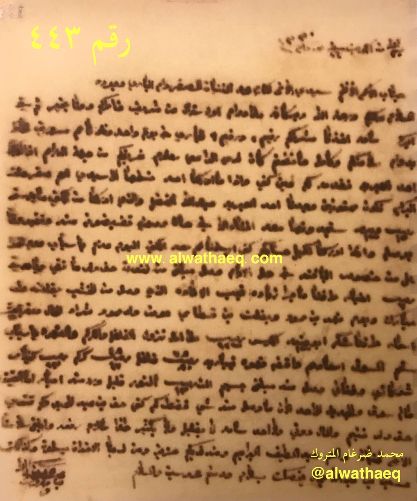
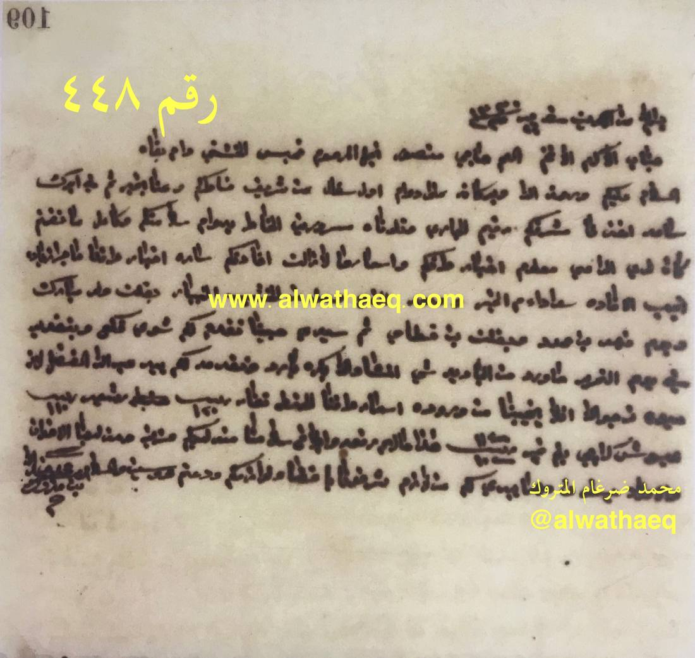

1912 · Letters of the Kuwaiti merchant Mohammed bin Abdullah bin Matrook
Al-Badri, the family's school boat, arrives with timber
What it is
Three 1912 letters list the ships arriving at Kuwait. Among them is the baghla of Bin Qatami, arriving with timber alongside the baghla of Walad Mubarak and the boom of Fahad bin Hamoud.
Why it matters
The family's baghla, known in the family as Al-Badri, its school boat, recorded at work in 1912.
Who is meant
Confirmed by the family: the baghla of Bin Qatami is Al-Badri, the family's school boat.
Page copies



Original text
English translation
Notes
Typed extracts as published by Alwathaeq. The letters call the boat by its owner, "the baghla of Bin Qatami"; the family knows it as Al-Badri.
Others named
Sources
Alwathaeq (alwathaeq.com): the ledgers and letters of the Kuwaiti merchant Mohammed bin Abdullah Al-Matrook, with commentary by Mohammed Dhurgham Al-Matrook. Scans as published by Alwathaeq.
Archive reference
- Letter 443 · 1912
- Letter 448 · 1912
- Letter 225 · 1912
How this text was made: Arabic extracts as published by Alwathaeq. English translation by Claude; please review.
Open in the interactive site